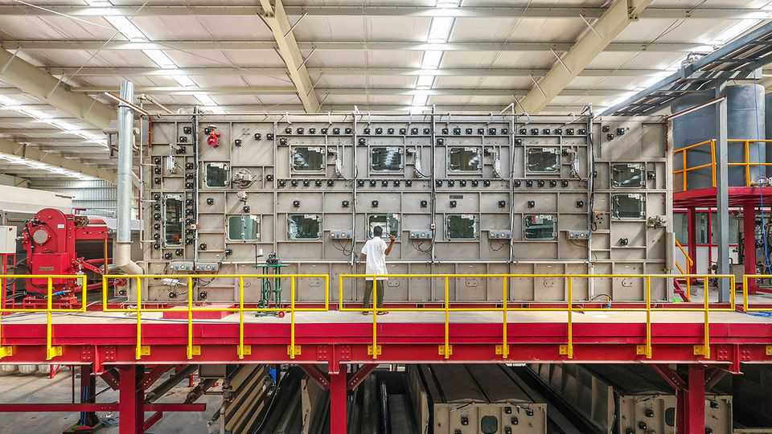
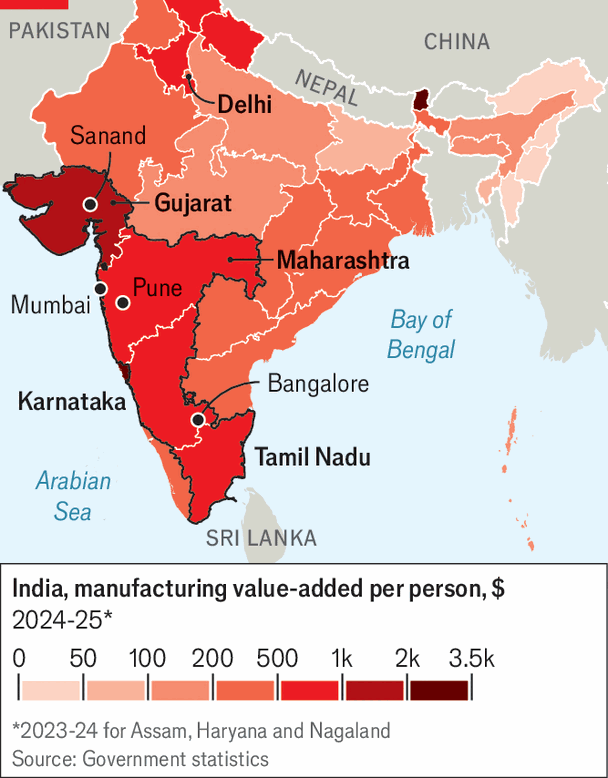

Indian manufacturing’s moment may finally have arrived
In one part of the country, at least, production is soaring

Oct 8th 2026
The newest factory of Raghuvir Exim, an Indian textile manufacturer, is a sight to behold. The plant, which makes bedding for export, covers around 200 acres (80 hectrares) on the outskirts of Ahmedabad, in the western state of Gujarat. Raghuvir Exim has built dormitories to house the 5,000 workers that will be needed when the site is at full capacity. Women, few of whom in India work, have been actively recruited. The factory uses top-quality European machines, rather than cheaper Chinese ones. And it is mostly powered by solar energy.
Yet it had a rocky start after opening in August last year. The factory initially operated at only 15% or so of its capacity, according to Hardik Agarwal, part of the family company’s third generation. A 50% tariff on Indian exports imposed by America around the same time hit sales hard.
The recent history of Indian manufacturing has involved many such disappointments. In 2014 Narendra Modi, the prime minister, unveiled a programme of deregulation and infrastructure investment, called “Make in India”, declaring that by 2022 the country would earn a quarter of national income from manufacturing. As of last year the share was 16%, having barely budged over the preceding decade.
Yet now may be India’s moment. Manufacturing output in August, the most recent figure available, was 9% higher than the year before, thanks in particular to surging production of cars and electronics.
Partly that reflects the fallout from the war in the Gulf: the rapid rise in the price of oil, which India typically buys in dollars, has caused the value of the rupee to plummet, making imports dearer and exports cheaper. The central bank’s first interest-rate rise in three years, announced on October 7th, did little to reverse the currency’s slide. But India’s rising manufacturing output also reflects its growing appeal as a place to make things. In dollar terms India’s electronics exports were up by 90% in August, year on year, with American-bound iPhones accounting for a large share of that.

Indeed, in one part of the country a transformation is now in full swing (see map). It starts in Gujarat, a hub for industries such as petrochemicals and pharmaceuticals; stretches south-east through Maharashtra, home to Pune, a locus for carmaking, as well as Mumbai, India’s financial capital; continues down into Karnataka, where a cluster of aerospace and defence companies surround the technology epicentre of Bangalore; and then into Tamil Nadu in the south, where various manufacturing industries now thrive. This group of states—call it “Industrial Pradesh”—is home to around 350m people, about a quarter of the population, but adds some $240bn of manufacturing value a year, half of India’s total. Its experience holds a number of lessons for the country as a whole.
First is the need to actively court investment, including from abroad. As far back as 2003 Mr Modi, then chief minister of Gujarat, established a biennial expo, called Vibrant Gujarat, that has given the state’s political and business leaders an opportunity to charm foreign investors. Maharashtra’s Industrial Development Corporation acquires land, builds industrial estates, and helps connect businesses to power and water in order to attract factories. Guidance Tamil Nadu, an investment-promotion agency, lures companies by identifying potential production sites and clearing bureaucratic hurdles. “In places like Tamil Nadu, if you want to get a licence you might have to pay some money, but you get the licence,” says an executive at one manufacturer. In other parts of India bribes are often followed only by requests for further bribes—and no licence.
The various industrial clusters that have emerged across Industrial Pradesh have often been built around anchor businesses—a second lesson for India as a whole. In the town of Sanand, in Gujarat, a Tata Motors car factory was opened in 2010 to replace a site in West Bengal that had been plagued by anti-capitalist protests. (Mr Modi played a central role in persuading the conglomerate to relocate production to his state.) Since then a network of auto-components suppliers has sprung up around it with factories of their own. “In every cluster that has worked in India, there was an anchor player,” says Rahul Jain of BCG, a consultancy.
Many anchor companies started out assembling finished goods from imported components, then gradually switched to local suppliers as these gained the necessary expertise and scale. That approach, first seen in carmaking, has become the model for other industries. Around a quarter of Apple’s iPhones are now assembled in India, in factories in Karnataka and Tamil Nadu run by Foxconn, a Taiwanese company, and Tata Electronics, another division of the conglomerate.
Originally the contract manufacturers simply put together imported parts, leading some to grumble that the manufacturing subsidies known as production-linked incentives that Mr Modi unveiled in 2020 were merely bankrolling the import of Chinese-made components. Yet in recent years makers of parts for the devices have also started setting up local factories. One industry estimate suggests that the value added in smartphone manufacturing in India has risen from $4.5bn in 2021 to $17.3bn last year.
India is eager to repeat the trick in clean energy and semiconductors. Imports of finished solar panels from China have dwindled since 2022, according to Ember, an advocacy group. Imports of solar cells, which go into the panels, and wafers, which go into cells, initially rose but have since shrunk as India has moved up the supply chain. Gujarat, the centre of India’s solar industry, can now make everything needed at competitive prices and with good quality, says Jigish Doshi of Vishakha Group, which produces aluminium frames for the panels and various other components (a glass furnace is in the works). Until Donald Trump slapped a whopping tariff on them in February, Indian solar exports to America had been surging.
Gigafactories for batteries are cropping up, too. Reliance Industries and the Adani Group, two other conglomerates, both of which are based in Industrial Pradesh, are in discussions with China’s CATL, the world’s largest battery manufacturer, about collaborating on local production.
An Indian semiconductor ecosystem is also beginning to take shape. Five new chipmaking facilities have opened in the country this year, four of them in Industrial Pradesh. These mostly assemble and test basic chips destined for cars, fridges and the like, of which Indians are expected to buy vast numbers in the years ahead. But the national government is trying to encourage production of more advanced chips as well. At an industry conference last month American and Japanese firms in the chipmaking supply chain pledged to set up factories for the high-purity gases and precision-engineered components needed for semiconductor production.
Indian manufacturing still has a long way to go. Industrial Pradesh is far from a global powerhouse. It manufactures about as much as Turkey, but does so with four times the population. Even compared with Vietnam, another poor but fast-growing Asian country, manufacturing output per person is a third lower.
Partly that reflects multinationals’ continued unease about dealing with the Indian government—a third lesson for the country. Its bewildering and aggressively enforced tax regime is a particular sticking point. Pernod Ricard, a French drinks company, is currently facing a claim for $314m in retrospective taxes. Volkswagen, a German carmaker, faces a mammoth legal case over allegations it misclassified components it brought into the country in order to pay lower import duties. Apple, meanwhile, is battling allegations from Indian trustbusters of anti-competitive practices related to its app store. (All three companies have denied wrongdoing.)
Even so, many Indian industrialists are in a buoyant mood. Although the bedding factory still operates below capacity, Mr Agarwal is optimistic about the prospects for his business. He has discovered new markets in Europe and South America that will generate plenty of sales while he waits for American tariffs on India to be lifted. And he can take comfort from the fact that, for the time being, big local competitors remain few and far between. That may not be true for long. ■